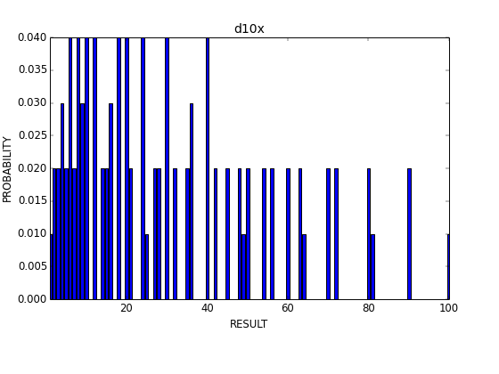
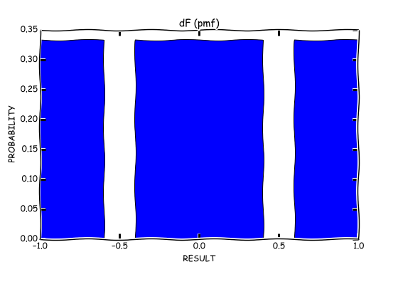

DiceRV :: Examples :: special dice
Rolling special dice.
The PMF of Cyborg Commando's d10x
import drv.game.cyborg as cyborg
import drv.plot_tools as ptl
## We plot the PMF bar plot
filename = 'examples/img/d10xpmf.png'
kwargs = dict(filename=filename, dpi=70)
d10x = cyborg.d10x
print "Mean:", d10x.mean
print "STD:", d10x.std
ptl.plot_bars(d10x, d10x.pmf, **kwargs)
The output of the above code is:
Mean: 30.25
STD: 23.8156986041

The PMF of a fudge die
import drv.game.fudge as fudge
import drv.plot_tools as ptl
## We plot the PMF bar plot
filename = 'examples/img/fudgepmf.png'
kwargs = dict(filename=filename, dpi=70,
xkcd=True)
fdie = fudge.fudge_die
print "Mean:", fdie.mean
print "STD:", fdie.std
ptl.plot_bars(fdie, fdie.pmf, **kwargs)
The output of the above code is:
Mean: 0.0
STD: 0.816496580928

The PMF of Games Workshop's D66
import drv.game.gw as gw
import drv.plot_tools as ptl
## We plot the PMF bar plot
filename = 'examples/img/d66pmf.png'
kwargs = dict(filename=filename, dpi=70,
xkcd=True)
d66 = gw.d66
print "Mean:", d66.mean
print "STD:", d66.std
ptl.plot_bars(d66, d66.pmf, **kwargs)
The output of the above code is:
Mean: 38.5
STD: 17.1634301156